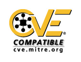

 Debian en CVE-compatibiliteit
Debian-ontwikkelaars begrijpen de noodzaak om accurate en up-to-date informatie aan te bieden in verband met de beveiligingsstatus van de Debian-distributie. Dit laat gebruikers toe het risico geassocieerd met nieuwe beveiligingslekken te beheren. Het Common Vulnerabilities and Exposures-project (CVE) stelt ons in staat om gestandaardiseerde beveiligingsverwijzingen aan te bieden, dit laat de gebruikers toe om een beveiligingsbeheerproces te ontwikkelen gebaseerd op CVE. CVE biedt een lijst van gestandaardiseerde namen voor beveiligingslekken.
Het Debian-project gelooft dat het ontzettend belangrijk is om gebruikers aanvullende informatie te verschaffen gerelateerd met de beveiliging van de Debian-distributie. De toevoeging van CVE-namen in beveiligingsberichten helpt gebruikers om algemene beveiligingslekken te associeren met Debian-updates, dit reduceert de tijd die wordt besteed aan het behandelen van beveiligingslekken die onze gebruikers kunnen treffen.
De aanwezigheid van algemene beveiligingsverwijzingen vergemakkelijkt ook het beveiligingsbeheer in een omgeving waar CVE-ondersteunde beveiligingshulpmiddelen zoals detectiesystemen voor indringers op het netwerk of de computer, worden gebruikt. Het wordt ook eenvoudiger wanneer hulpmiddelen voor beveiligingsanalyse al worden ingezet, ongeacht of ze gebaseerd zijn op de Debian-distributie.
Het Debian-project heeft CVE-namen toegevoegd aan alle beveiligingsberichten (DSA) die gepubliceerd zijn vanaf september 1998 door een proces gestart op augustus 2002. Alle berichten kunnen van de Debian-website afgehaald worden en aankondigingen gerelateerd met nieuwe beveiligingslekken bevatten CVE-namen wanneer deze beschikbaar zijn bij hun uitgifte.
De Debian Beveiligings Tracker bevat het officiële overzicht van CVE-namen, betreffende Debian pakketten, Debian Beveiligingsberichten (DSA) en nummers van probleemrapporten. Deze kan worden doorzocht op pakketnaam of DSA/CVE-naam en omvat gegevens vanaf de Debian Woody release.
Voor oudere gegevens kunt u de gebruik maken van de zoekmachine van de website of de tabel met verwijzigingen raadplegen die alle beschibare verwijzingen voor beveiligingsberichten vanaf 1997 bevat. Deze tabel is bedoeld als aanvulling op de verwijzingskaart bij CVE.
Veelgestelde vragen over de CVE-status
- Wat is de huidige status van Debian in het CVE-proces?
- Waarom vind ik een bepaalde CVE-naam niet?
- Waar kan ik aanvullende informatie vinden?
Q: Wat is de huidige status van Debian in het CVE-proces?
Debian Beveiligingsberichten (DSA) zijn op 24 februari 2004 CVE-Compatibel verklaard. Meer informatie is beschikbaar op de CVE-site, inbegrepen de geschiktheidsvragenlijst.
{kind=link}
Q: Waarom vind ik een bepaalde CVE-naam niet?
De Beveiligings Trackers behoort alle CVE-namen te bevatten. Voor de overige overzichten is het mogelijk dat u een bepaalde CVE-naam niet in gepubliceerde beveilingingsberichten terugvindt omdat:
- er geen Debian-producten aangetast zijn met het beveiligingslek,
- of er is nog geen bericht dat handelt over het beveiligingslek,
- of er was een bericht gepubliceerd voordat er een CVE-naam werd toegekend aan een bepaald beveiligingslek.
Q: Waar kan ik aanvullende informatie vinden?
Bezoek voor nadere informatie de CVE-website.